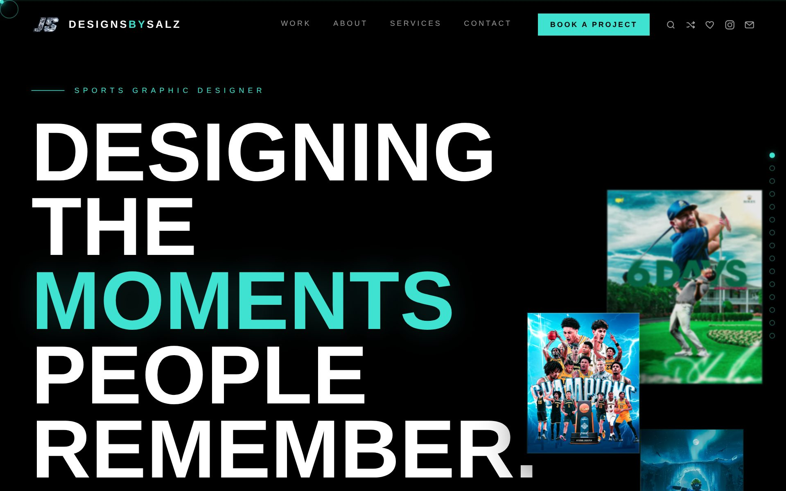

DESIGN HISTORY
Every era of designsbysalz.net gets archived here — because taste should have receipts. New version, new entry, every year.

V.2027 — TO BE DESIGNED. SEE YOU NEXT SEASON.
Every era of designsbysalz.net gets archived here — because taste should have receipts. New version, new entry, every year.
